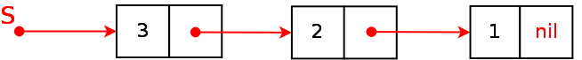

Особенности языка С. Учебное пособие
Структуры одного типа можно объединять не только в массивы. Их можно связывать между собой, создавая так называемые динамические структуры данных. Связь между отдельными структурами может быть организована по-разному, и именно поэтому среди динамических данных выделяют списки, стеки, очереди, деревья, графы и др. Мы не будем рассматривать каждый тип. Цель этого урока — понять, что такое динамические данные, и как они создаются на языке программирования C.
Для динамических данных память выделяется и освобождается в процессе выполнения программы, а не в момент ее запуска. Так, например, если в программе объявлен массив из 100 элементов, то при запуске программы резервируется память для всех ста элементов, даже если в процессе работы программы всего будут использованы первые 10 элементов массива. С другой стороны, при использовании в программе динамических типов память под них заранее не выделяется. Лишь когда поступают новые данные, вызывается специальная функция, которая выделяет память, куда эти данные записываются.
Тут появляется проблема. Для динамических типов данных не объявляются переменные, иначе память бы выделялась под переменные. Как тогда обращаться к данным, записанным неизвестно где в памяти? Можно ввести переменные-указатели и при выделении памяти записывать адрес этой памяти в указатели. Но мы же не знаем, сколько памяти потребуется в процессе выполнения. Сколько вводить указателей?
Проблема решается путем использования структур. Допустим, мы пишем программу, позволяющую вводить данные на сотрудников организации. Количество сотрудников неизвестно. Можно было бы создать массив записей с запасом. Однако, если данных о каждом сотруднике много, то каждая запись занимает много памяти; получается, что мы будем расходовать много памяти в пустую, если сотрудников мало.
Идея заключается примерно в следующем:
Таким образом получается цепочка взаимосвязанных структур. Самая первая созданная структура не имеет ссылки на другую структуру. Ее поле-указатель имеет значение NULL. Вторая созданная структура ссылается на первую, третья на вторую и т.д. Адрес последней созданной структуры хранится в переменной-указателе, которая была объявлена в программе программистом.
Чтобы извлечь данные из такого агломерата данных, надо пройтись по ссылкам начиная с переменной-указателя. Т.е. первой мы извлечем последнюю записанную структуру. Потом предпоследнюю и постепенно будем двигаться к структуре, которая была создана первой во времени. Такой динамический тип данных называется стеком. Объекты извлекаются из стека таким образом, что первым выбирается тот, который был помещен последним.

Стек — это не единственный способ организации динамических данных, но наиболее простой.
Если динамические данные больше не нужны, следует не забыть освободить память.
В языке программирования C выделение памяти в процессе выполнения программы можно организовать с помощью функций malloc() и calloc(), освобождение памяти с помощью free(). Объявление этих функций находится в заголовочных файлах stdlib.h и malloc.h. К исходному коду можно подключить любой из них.
Функция malloc() принимает в качестве параметра число, обозначающее объем памяти, который требуется выделить. Если свободная память есть, и malloc() удается ее "захватить", то функция возвращает указатель на нее. Этот указатель не имеет типа, поэтому программист самостоятельно должен привести его к требуемому в программе типу данных.
Функция free() принимает указатель, и освобождает память по адресу, который он содержит.
Рассмотрим программу:
#include <stdio.h> #include <stdlib.h> struct stack { int data; struct stack *next; }; struct stack *create(struct stack *, int); // присоединение элемента к голове, возврат адреса головы void list(struct stack *); // просмотр стека main() { int i, n; struct stack *head; // адрес, указывающий на голову стека head = NULL; scanf("%d", &n); for (i=0; i <= n; i+=5) { head = create(head,i); printf("%d<--", head->data); } printf("\n"); list(head); free(head); } struct stack *create(struct stack *head, int x) { struct stack *element; // указатель на новую структуру element = (struct stack *)malloc(sizeof(struct stack)); // выделяем память element->next = head; element->data = x; return element; } void list(struct stack *p){ while (p != NULL) { // пока не конец стека printf("%d-->", p->data); p = p->next; // продвижение по списку } printf("\n"); }
В процессе выполнения эта программа запрашивает целое число и сначала выводит числа от 0 до указанного числа, а затем выводит их же в обратном порядке — от указанного число до нуля:
60 0<--5<--10<--15<--20<--25<--30<--35<--40<--45<--50<--55<--60<-- 60-->55-->50-->45-->40-->35-->30-->25-->20-->15-->10-->5-->0-->
Осталось выяснить почему она так делает.
main() создается указатель (head) на struct stack, которому сначала присваивается NULL, т.к. он никуда не указывает. create(), которой передается текущее значение указателя (адрес) и какое-то число.create() создается новый указатель (element) типа struct stack.malloc() выделяется память, необходимая под одну структуру. Объем этой памяти вычисляется с помощью функции sizeof(). Возвращаемый malloc() указатель приводится к типу struct stack.create() там содержится NULL. При последующих вызовах адрес памяти созданной в предыдущем вызове функции структуры. Таким образом в поле next структуры, доступной по указателю element, сохраняется адрес, содержащийся в head. Следовательно head в дальнейшем можно изменить, не потеряв связь с предыдущими данными.create() возвращается указатель на только что выделенную память с новой структурой, в которой сохранен адрес на предыдущую структуру. Этот указатель присваивается head. В результате head постоянно указывает на последнюю созданную структуру.printf() выводится значение поля data структуры, на которую указывает в данный момент head. list() позволяется просмотреть стек, получив указатель на его последний (по времени создания) элемент. При вызове значение head присваивается переменной p. Обратите внимание, изменение p в теле list() не повлияет на значение head в теле main(). Переменная p получает копию адреса и далее изменяет лишь свое значение. p = p->next сначала изымается значение из поля next структуры, на которую указывает p. Там содержится адрес на предыдущую структуру, и этот адрес присваивается p. Таким образом p как бы перемещается по стеку, начиная с последней вошедшей в него структуры и заканчивая на той, которая была создана первой. Поле next первой структуры содержит NULL, который служит условием выхода из цикла.free() освобождает память по адресу, на который указывает head. (Освобождается ли при этом вся выделенная память или только та, что была отведена на последнюю структуру?)Преимущество этой программы в том, что память выделяется только под то количество структур, которое необходимо. Количество структур определяется в процессе выполнения программы. Однако приходится тратить память на указатели. Если структура содержит лишь одно значащее поле, как в примере выше, то такие затраты могут быть неоправданны. Проще было бы объявить массив с запасом. Но если структура сложная, содержит много полей, то организация динамических типов данных приносит существенный плюс.
Задание